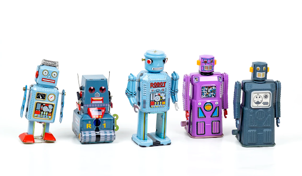

2021-05-25
Guten Tag! On June 16th, we’ll be teaming up with eoda and Covestro to discuss—in German—how they put their data science into production by developing a unified infrastructure. In addition to learning about Covestro’s success, participants will also receive hands-on guidance on deploying data products in highly structured environments.

Photo by Ekrull on Unsplash
The primary problem for Covestro, a leading manufacturing company in Germany, was that they lacked a centralized development environment. Data scientists that used R and Python did complex analyses on their laptops and used a variety of tools to analyze and share results. The team decided that they wanted to deliver a greater impact at faster speeds, and so with the help of eoda and RStudio, they created a centralized, reproducible analytics infrastructure. Although R and Python represent the core of their environment, many other techniques and tools were integrated such as H2O for machine learning, scaling with kubernetes, CI/CD with GitLab, and version control with SVN. Not only did this framework increase the collaboration of Covestro’s data science teams, but compliance guidelines could also be better fulfilled. A centralized infrastructure, incorporating statistics, IT support, machine learning and artificial intelligence, enables decentralized teams to solve problems and achieve long-term success.
The second half of this 2-hour German webinar will be a hands-on workshop that participants can follow along with. The instructors will discuss how to use RStudio products, including native git integration and multiple approaches to deploying with RStudio Connect. This workshop will provide teams with an excellent collaborative workflow for building, maintaining, and scaling projects in a growing data science environment.
Insights into the pain points and solutions for the data science initiatives of Covestro. What is a centralized analytics system? What tools and techniques are needed?
How to identify existing building blocks in your infrastructure and successfully address them. What is infrastructure as code? What is the business value for your company?
Exclusive insights into RStudio products. How to use the native git integration of RStudio products? How does deployment work with RStudio Connect?
Please note: This live webinar will be presented in German, and English subtitles will be provided approximately 3 weeks following the recording.
Register here: https://www.eoda.de/webinar-data-science-in-production/